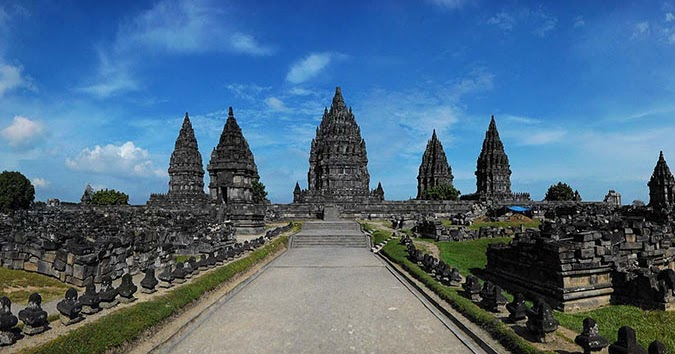
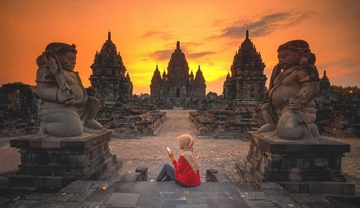

Sejarah Dibalik Kemegahan Bangunan Candi

Candi Prambanan, dikenal sebagai "Roro Jonggrang," adalah kompleks candi Hindu terbesar di Indonesia, terletak sekitar 17 kilometer timur laut Yogyakarta, Jawa Tengah. Dibangun pada abad ke-9 Masehi oleh dinasti Mataram, candi ini adalah salah satu warisan budaya terkemuka dan menjadi situs warisan dunia UNESCO.
- Arsitektur dan Tata Letak
Candi Prambanan terdiri dari tiga candi utama yang menjulang tinggi, masing-masing didedikasikan untuk Trimurti Hindu, yaitu Brahma, Wisnu, dan Siwa. Candi Siwa yang paling tinggi mencapai ketinggian 47 meter dan dikelilingi oleh candi-candi perwara dan banyak candi pendukung. Bangunan ini pertama kali dibangun sekitar tahun 850 Masehi oleh Rakai Pikatan dan secara berkelanjutan disempurnakan dan diperluas oleh Raja Lokapala dan raja Sri Maharaja Dyah Balitung Maha Sambu. Berdasarkan prasasti Siwagrha berangka tahun 856 M. Selain itu, terdapat candi-candi kecil yang tersebar di sekitarnya, menambah keelokan tata letak kompleks ini.
- Ukiran Batu Relief
Salah satu keunggulan Candi Prambanan adalah ukiran batu reliefnya yang luar biasa. Relief-relief ini menggambarkan kisah epik Ramayana dan Mahabharata, menampilkan adegan-adegan penuh makna dari kedua epik tersebut. Setiap relief diukir dengan detail halus, menciptakan karya seni yang megah dan memukau.
- Mitos Cerita Rakyat
Candi Prambanan dikaitkan dengan legenda Roro Jonggrang, yang merupakan tokoh utama dalam cerita rakyat Jawa. Menurut legenda, Roro Jonggrang menjadi batu setelah mencoba mengelabui Bandung Bondowoso, seorang pemuda yang jatuh cinta padanya. Candi Prambanan dianggap sebagai manifestasi Roro Jonggrang yang diubah menjadi batu.
- Status sebagai Warisan Budaya
Pada tahun 1991, Candi Prambanan diakui sebagai situs warisan dunia oleh UNESCO. Keindahan arsitektur dan signifikansinya dalam konteks sejarah dan kebudayaan menjadikannya daya tarik utama bagi wisatawan, sejarawan, dan pencinta seni dari seluruh dunia.
Wisata Candi Prambanan

Candi Prambanan, sebagai salah satu situs warisan dunia UNESCO di Indonesia, menawarkan pengalaman wisata yang mempesona dengan menyelami kekayaan sejarah, arsitektur megah, dan keindahan seni klasik. Berikut adalah aspek-aspek menarik dalam wisata Candi Prambanan:
1. Monumen Agung
Dengan tiga candi utama yang menjulang tinggi, Candi Prambanan menghadirkan keagungan seni arsitektur Hindu-Jawa. Candi Siwa yang paling tinggi mencapai ketinggian yang mengagumkan.
2. Ukiran Batu Relief
Melalui ukiran batu relief yang rumit, pengunjung dapat mengikuti cerita epik Ramayana dan Mahabharata. Setiap relief merupakan karya seni terperinci yang menciptakan suasana magis.
3. Teater Ramayana Ballet
Pengalaman wisata di Candi Prambanan tidak lengkap tanpa menyaksikan pertunjukan Ramayana Ballet yang dilakukan di teater terbuka pada malam hari di sekitar candi. Pertunjukan ini memadukan seni tari tradisional, musik, dan cahaya yang menciptakan atmosfer yang luar biasa.
4. Kawasan Sejuk dan Hijau
Kawasan rimbun dan bersih area sekitar candi dilindungi dengan baik dan menyuguhkan lingkungan yang asri dan hijau. Pohon-pohon tua dan ruang terbuka memberikan suasana tenang yang sempurna untuk bersantai.
5. Upacara Keagamaan
Pemujaan agama Hindu beberapa kali dalam setahun, Candi Prambanan menjadi saksi dari upacara keagamaan Hindu yang dihadiri oleh umat Hindu dari berbagai tempat. Candi Prambanan menjadi saksi bisu dari kejayaan peradaban Mataram Kuno. Pemahaman tentang sejarah dan mitologi Hindu-Jawa akan memperdalam pengalaman wisatawan.
6. Fasilitas Wisata
Terdapat museum dan pusat informasi di sekitar kompleks candi yang memberikan wawasan tambahan tentang sejarah dan nilai-nilai budaya Candi Prambanan.
Wisata Candi Prambanan tidak hanya memberikan pesona sejarah dan arsitektur, tetapi juga menyuguhkan pengalaman yang mendalam dalam kekayaan budaya Indonesia. Bagi pencinta sejarah, seni, dan spiritualitas, Candi Prambanan menjadi destinasi wisata yang tak terlupakan.